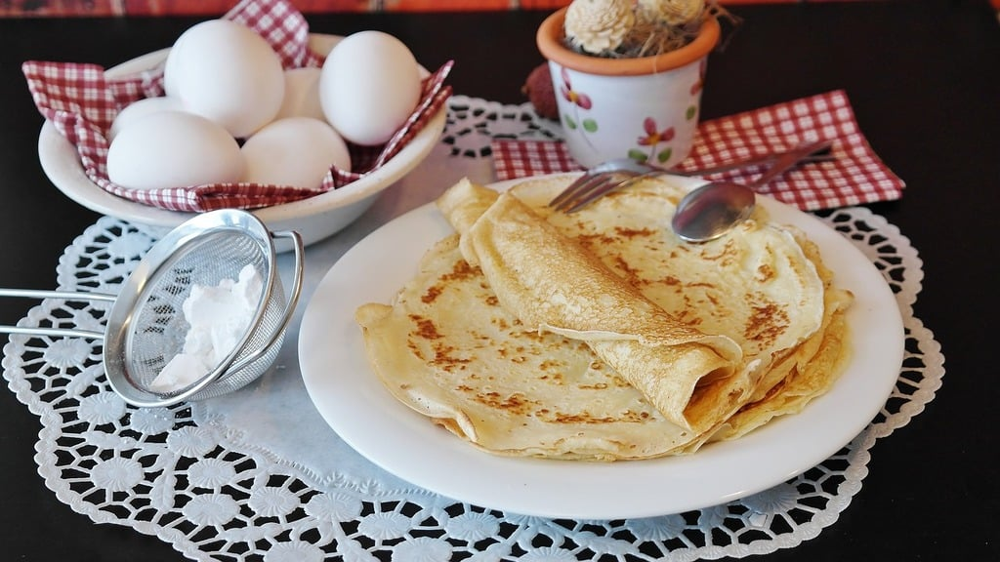

Crepes Recipe

This recipe will teach you how to make your very own delicious pancakes!
This is an easy recipe anyone can master. Prep time is only 10 minutes,
and will take around 20 minutes to cook, and you should have enough batter
to make 10 pancakes.
Ingredients
- 1 ½ cups milk
- 3 egg yolks
- 2 tablespoons vanilla extract
- 1 ½ cups all-purpose flour
- 2 tablespoons sugar
- ½ teaspoon salt
- 5 tablespoons melted butter
Home